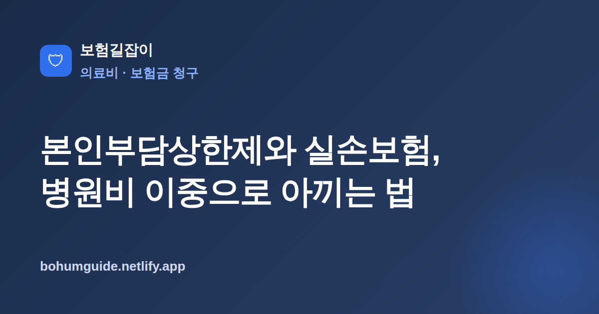

본인부담상한제와 실손보험, 병원비 이중으로 아끼는 법
큰 병으로 병원비가 많이 나왔다면, 실손보험으로 돌려받는 것 말고도 건강보험이 사후에 돌려주는 돈이 따로 있을 수 있습니다. 두 제도를 함께 이해하면 병원비를 이중으로 아낄 수 있습니다.

✍️ 편집자 참고: 본 글은 초안입니다. 상한액·소득분위 기준은 매년 고시로 바뀌니 게시 전 최신 기준으로 검수·수정해 주세요.
병원비가 크게 나온 해일수록 챙겨야 할 제도가 본인부담상한제입니다. 실손보험만 청구하고 끝내면 정작 건강보험이 돌려주는 환급금을 놓치기 쉽습니다. 두 제도가 어떻게 맞물리는지, 어떤 순서로 챙겨야 손해가 없는지 실전 기준으로 정리했습니다.
본인부담상한제란 무엇인가
본인부담상한제는 1년 동안 병원에 낸 건강보험 급여 항목의 본인부담금이 개인별 상한액을 넘으면, 그 초과분을 국민건강보험공단이 사후에 돌려주는 제도입니다. 즉 급여 진료비를 아무리 많이 내도 1년 총액이 정해진 한도를 넘으면 넘은 만큼은 결국 국가가 환급해 줍니다. 큰 수술이나 장기 입원처럼 급여 진료비 부담이 컸던 해에 특히 효과가 큽니다.
주의할 점은 비급여 진료(선택 항목, 상급병실 차액, 미용·성형 등)와 전액 본인부담 항목은 상한제 계산에서 빠진다는 것입니다. 상한제가 보호하는 것은 어디까지나 건강보험 급여 안에서 본인이 낸 몫입니다. 다시 말해 비급여 비중이 큰 진료였다면 상한제 환급 효과는 생각보다 작을 수 있고, 이때는 오히려 실손보험의 역할이 커집니다. 두 제도가 서로 다른 부분을 메워 주는 셈이라, 어느 하나만 챙기면 병원비를 온전히 회수하기 어렵습니다.
상한액은 소득분위·요양기간에 따라 다르다
모든 사람에게 같은 상한액이 적용되는 것은 아닙니다. 소득이 낮을수록 상한액이 낮게(=더 빨리 환급), 소득이 높을수록 높게 설정됩니다. 또한 요양병원에 오래 입원한 경우에는 별도의 더 높은 상한이 적용되는 등 요양기간에 따른 구분도 있습니다.
| 구분 | 내용 |
|---|---|
| 상한액 | 소득분위가 낮을수록 낮게, 높을수록 높게 설정 |
| 요양기간 | 요양병원 장기 입원 여부에 따라 상한액 구간이 달라짐 |
| 대상 비용 | 건강보험 급여 항목의 본인부담금(비급여·전액본인부담 제외) |
핵심 정리
상한액의 구체적 금액과 소득분위 구간은 매년 고시로 바뀝니다. 특정 연도의 숫자를 외우기보다, "내 소득분위 기준으로 올해 상한액이 얼마인지"를 공단에서 그해 기준으로 확인하는 습관이 중요합니다.
실손보험과의 관계: 이중보상은 조정된다
여기서 많은 분이 혼동합니다. 실손보험은 이름 그대로 가입자가 '실제로 부담한' 의료비만 보상하는 실손 보상 원칙을 따릅니다. 그런데 본인부담상한제로 초과분을 환급받으면, 그 부분은 결과적으로 내가 부담하지 않은 돈이 됩니다. 따라서 상한제로 돌려받은(또는 돌려받을) 금액은 실손 보상 대상에서 빠질 수 있습니다. 같은 병원비를 실손과 상한제에서 이중으로 받는 것을 막기 위한 조정입니다.
그럼 손해 아닌가요?
손해가 아닙니다. 상한제 초과분은 실손이 아니라 건강보험공단이 대신 돌려주는 구조이므로, 결국 받는 총액은 크게 달라지지 않습니다. 다만 이미 실손에서 상한제 초과분까지 보험금을 받아 간 경우, 나중에 보험사가 그만큼을 정산·환수 요청할 수 있으니 놀라지 않도록 구조를 알아두는 것이 좋습니다. 자기부담 개념 자체가 헷갈린다면 자기부담금 뜻과 계산 예시를 함께 보면 이해가 빠릅니다.
실전: 환급 조회·신청과 청구 순서
실무에서는 순서와 확인만 챙기면 됩니다. 상한제 환급은 대개 진료가 끝난 뒤 일정 기간이 지나 공단이 확정해 안내하지만, 직접 조회·신청할 수도 있습니다.
- 국민건강보험공단(The건강보험 앱·홈페이지, 1577-1000)에서 본인부담상한제 환급금 대상 여부와 금액을 조회
- 대상이면 본인 계좌로 지급 신청(공단이 안내문·신청서를 보내오는 경우도 있음)
- 실손 청구 시에는 상한제 환급분이 있는지 확인하고, 이미 받은 금액과 중복되지 않도록 정리
- 세대별로 자기부담 구조가 다르니 실손의료보험 세대별 정리로 내 조건 확인
환급 방식과 시기 이해하기
상한제 환급은 크게 두 가지로 나뉩니다. 하나는 병원이 진료 시점에 이미 상한을 넘은 금액을 받지 않는 사전급여 방식이고, 다른 하나는 1년치 진료가 확정된 뒤 공단이 초과분을 계산해 돌려주는 사후환급 방식입니다. 대부분의 개인이 챙겨야 하는 것은 이듬해에 정산되는 사후환급 쪽입니다.
청구 서류나 절차 전반이 낯설다면 보험금 청구 절차 총정리를 참고하면 실손·상한제 서류를 한 번에 정리하는 데 도움이 됩니다. 상한제 환급은 소멸시효(신청 가능 기간)가 있으므로, 큰 병원비가 있었던 해라면 미루지 말고 조회부터 하는 것이 안전합니다. 가족 중 병원 이용이 많았던 사람이 있다면 각자 명의로 따로 조회해야 누락이 없습니다.
요약
본인부담상한제는 급여 본인부담금이 연간 상한을 넘으면 초과분을 공단이 사후 환급해 주는 제도이고, 실손보험은 실제 부담액만 보상하므로 상한제 환급분은 실손에서 조정될 수 있습니다. 큰 병원비가 있었던 해에는 실손만 청구하고 끝내지 말고, 공단에서 상한제 환급 대상 여부를 반드시 함께 조회하세요. 급여는 상한제로, 비급여는 실손으로 회수한다는 큰 틀을 기억하면 병원비를 놓치는 부분 없이 챙길 수 있습니다.
본 정보는 일반적인 안내이며, 상한액·환급 기준과 실제 보장은 국민건강보험공단 및 각 보험사 약관, 전문가 상담을 통해 반드시 확인하시기 바랍니다.